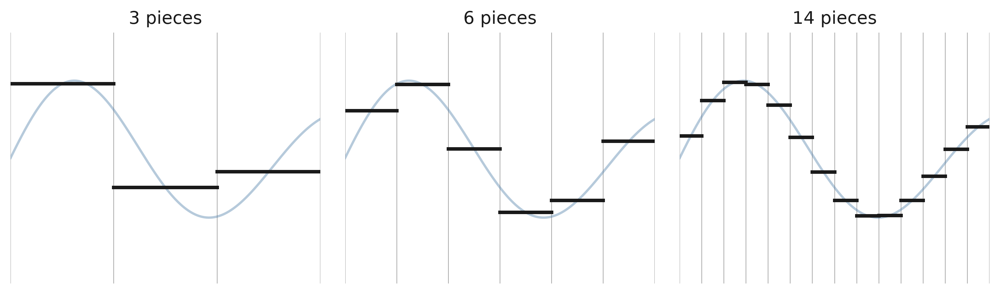

5 Class 5: Weak Form ⇒ Strong Form, and the Galerkin Method
Last time, given \(f\), \(g\), \(h\), and \(\underline{\underline{K}}\), we let
\[ \mathcal{S} = \left\{\, u \in H^1(\Omega) \;\middle|\; u = g \text{ on } \Gamma_g \,\right\} \qquad\qquad \mathcal{V} = \left\{\, w \in H^1(\Omega) \;\middle|\; w = 0 \text{ on } \Gamma_g \,\right\} \]
and showed that if \(u\) solves the strong form, then it also satisfies: find \(u \in \mathcal{S}\) such that for every \(w \in \mathcal{V}\),
\[ (\mathrm{W}) \qquad \int_\Omega \nabla w \cdot \underline{\underline{K}}\nabla u\;d\Omega = \int_\Omega wf\;d\Omega + \int_{\Gamma_h} wh\;d\Gamma \]
Write the strong form and weak form of the BVP on the left board, for reference throughout class.
Goals:
- Strong form \(\Rightarrow\) Weak form
- Weak form \(\Rightarrow\) Strong form
- Weak form \(\Rightarrow\) Galerkin form
The first of these was written out at the end of Class 4 but not worked through in class, so it is carried over here; the rest of this class takes the other two.
6 Weak form \(\Rightarrow\) strong form
Run the previous class’s steps in reverse, starting from \((\mathrm{W})\) written in multivariate-calculus form:
\[ \int_\Omega \nabla w \cdot \underline{\underline{K}}\nabla u\;d\Omega = \int_\Omega wf\;d\Omega + \int_{\Gamma_h} wh\;d\Gamma \]
Recall \(w(x) = 0\) on \(\Gamma_g\), and \(\Gamma_g \cup \Gamma_h = \Gamma\), so the right-hand boundary term can be extended to the whole boundary \(\Gamma\) without changing anything:
\[ \int_\Omega \nabla w \cdot \underline{\underline{K}}\nabla u\;d\Omega = \int_\Omega wf\;d\Omega + \int_{\Gamma} wh\;d\Gamma \qquad\Longrightarrow\qquad 0 = \int_\Omega \left(wf - \nabla w\cdot\underline{\underline{K}}\nabla u\right) d\Omega + \int_\Gamma wh\;d\Gamma \]
Now run the Divergence Theorem in reverse — the same identity used last time, applied to pull \(\nabla w \cdot \underline{\underline{K}}\nabla u\) back into a divergence:
\[ 0 = \int_\Omega \left(wf + w\,\nabla\cdot\left(\underline{\underline{K}}\nabla u\right)\right) d\Omega + \int_\Gamma \left(wh - w\left(\underline{\underline{K}}\nabla u\right)\cdot\underline{n}\right)d\Gamma \]
Now, the above holds for every \(w \in \mathcal{V}\). This freedom to choose \(w\) is what lets us tease the two boundary conditions apart, using the fundamental lemma of the calculus of variations: if \(\int_\Omega \beta\,\phi\;d\Omega = 0\) for every admissible \(\phi \ge 0\), then \(\beta = 0\) everywhere \(\phi\) can be positive.
6.1 Recovering the PDE on \(\Omega\)
Pick \(w = \left[f + \nabla\cdot(\underline{\underline{K}}\nabla u)\right]\phi\) for some smooth \(\phi\) with \(\phi > 0\) on \(\Omega\) and \(\phi = 0\) on \(\Gamma\) (so that \(w \in \mathcal{V} \cap H^1(\Omega)\)). This choice makes the boundary integral vanish identically, leaving
\[ 0 = \int_\Omega \left(f + \nabla\cdot\left(\underline{\underline{K}}\nabla u\right)\right)^2 \phi\;d\Omega \]
But \(\phi > 0\) on \(\Omega\) and \(\left(f + \nabla\cdot(\underline{\underline{K}}\nabla u)\right)^2 \ge 0\) everywhere. An integral of a non-negative quantity that comes out to zero forces the integrand itself to be zero:
\[ \Longrightarrow \qquad \left(f + \nabla\cdot\left(\underline{\underline{K}}\nabla u\right)\right)^2 = 0 \qquad\Longrightarrow\qquad \boxed{-\nabla\cdot\left(\underline{\underline{K}}\nabla u\right) = f} \qquad \text{on } \Omega \]
6.2 Recovering the flux condition on \(\Gamma_h\)
Next, pick \(w = \left[h - \left(\underline{\underline{K}}\nabla u\right)\cdot\underline{n}\right]\psi\) for some smooth \(\psi\) with \(\psi > 0\) on \(\Gamma_h\) and \(\psi = 0\) on \(\Gamma_g\). Because the PDE result above already makes the domain integral vanish for any \(w\), this choice leaves only
\[ 0 = \int_{\Gamma_h} \left[h - \left(\underline{\underline{K}}\nabla u\right)\cdot\underline{n}\right]^2 \psi\;d\Gamma \]
By the same argument — \(\psi > 0\) on \(\Gamma_h\), and the bracketed quantity is squared —
\[ \Longrightarrow \qquad \boxed{\left(\underline{\underline{K}}\nabla u\right)\cdot\underline{n} = h} \qquad \text{on } \Gamma_h \]
6.3 Summarizing
\[ -\nabla\cdot\left(\underline{\underline{K}}\nabla u\right) = f \quad \text{on } \Omega \qquad\text{(from the domain argument)} \]
\[ \left(\underline{\underline{K}}\nabla u\right)\cdot\underline{n} = h \quad \text{on } \Gamma_h \qquad\text{(from the boundary argument)} \]
\[ u(x) = g(x) \quad \text{on } \Gamma_g \qquad\text{(because } u \in \mathcal{S} \text{ by assumption)} \]
In sum: if we pick two really, really good choices for \(w \in \mathcal{V}\), we exactly recover the strong form for \(u \in \mathcal{S}\). Together with last class’s argument, this shows \((\mathrm{S}) \Leftrightarrow (\mathrm{W})\) — the two formulations are truly equivalent, not merely “the weak form is an approximation.”
7 The Galerkin method
Typically, we don’t know the really, really good choices for \(w\) to test \(u\) against — if we did, we’d already know the solution to our problem, most likely. Instead, we want to pick “good” choices that can approximate with arbitrary accuracy.
- sines and cosines \(\leftarrow\) Fourier series
- piecewise polynomials of a fixed degree
We want functions that are “dense” in a “complete” space.
- Complete: we take limits of functions and still end up with a function in the space. (\(C^\infty\) functions are not complete, nor are \(C^0\); \(H^1(\Omega)\) and \(L^2(\Omega)\) are complete.)
- Dense: any function in the space is arbitrarily close to our specified choice of function.
Piecewise polynomials are “complete” (in the sense we want) — think of a computer screen and pixels.

8 The Galerkin form
\[ (\mathrm{G}) \qquad \begin{array}{l} \text{Given } f,\, g,\, h,\, \underline{\underline{K}} \text{ as in } (\mathrm{W}), \text{ find } u^h = v^h + g^h, \text{ with } v^h \in \mathcal{V}^h \subset \mathcal{V},\; g^h \in \mathcal{S}^h \subset \mathcal{S} \\[6pt] \text{such that } \forall\, w^h \in \mathcal{V}^h \subset \mathcal{V}, \\[6pt] \qquad \displaystyle\int_\Omega w^h_{,i}\,K_{ij}\,u^h_{,j}\;d\Omega = \int_\Omega w^h f\;d\Omega + \int_{\Gamma_h} w^h h\;d\Gamma \end{array} \]
Typically, we choose
\[ v^h = \sum_A \underset{\substack{\uparrow \\ \text{coefficients}}}{d_A}\; \underset{\substack{\uparrow \\ \text{"basis" functions}}}{N_A(x)} \qquad\qquad g^h(x) = \sum_B g_B\,N_B(x) \]
where the \(N_B\) appearing in \(g^h\) are nonzero on \(\Gamma_g\) and zero away from \(\Gamma_g\) — they are exactly the basis functions that carry the known boundary data.
Next class picks up with this idea concretely: Lagrange polynomials as a basis for piecewise-polynomial spaces.